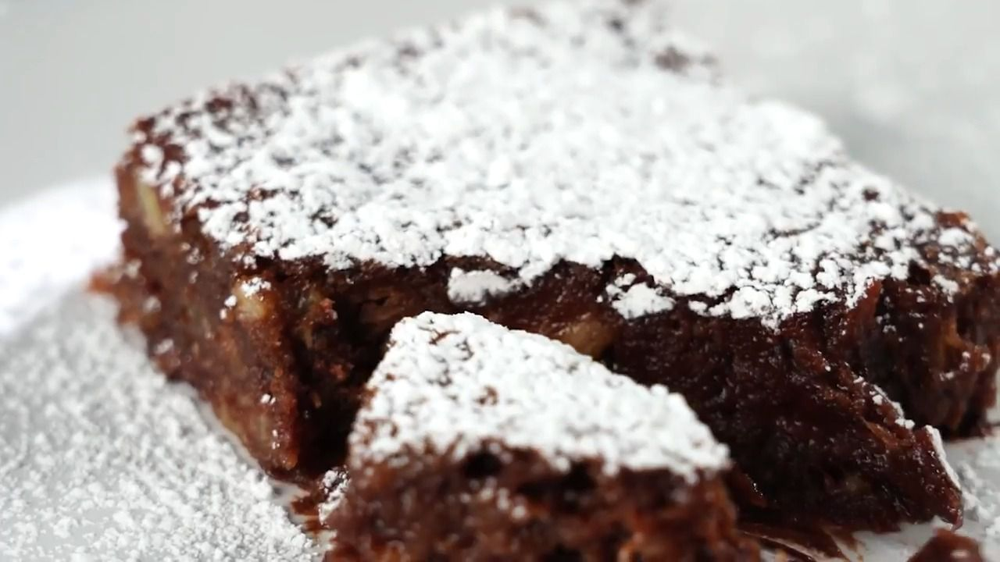

Banana Brownies

Description
Fudgy banana brownies! Mashed banana adds delicious banana flavor to a simple made-from-scratch chocolate brownie
recipe.
Ingredients
- ½ cup unsalted butter
- ⅔ cup semisweet chocolate chips
- 1 large egg
- ⅔ cup packed light brown sugar
- 1 small ripe banana, mashed
- ½ teaspoon vanilla extract
- ¼ teaspoon salt
- ¾ cup all-purpose flour
Steps
- Preheat the oven to 165 °C (325 °F). Grease an 20cm square baking pan.
- Melt butter in a saucepan over medium-low heat. Remove from the heat and stir in chocolate chips until
melted. Set aside to cool for 5 minutes.
- While the chocolate mixture is cooling, lightly beat egg in a medium bowl. Stir in brown sugar, mashed
banana, vanilla, and salt until well combined.
- Stir cooled melted chocolate mixture into banana mixture until well combined. Stir in flour until just
incorporated. Spread batter into the prepared pan.
- Bake in the preheated oven until the top is dry and the edges have started to pull away from the sides of
the pan, about 30 minutes.
- Let pan cool on a wire rack before cutting into 16 squares.
- Enjoy your banana brownies!